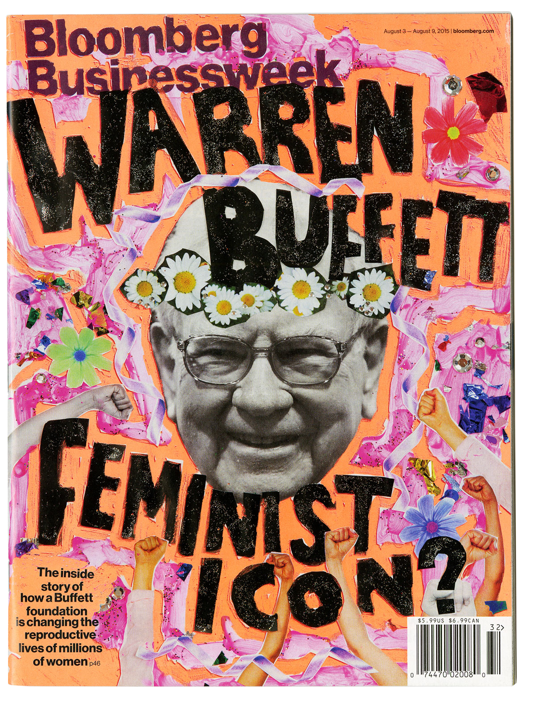
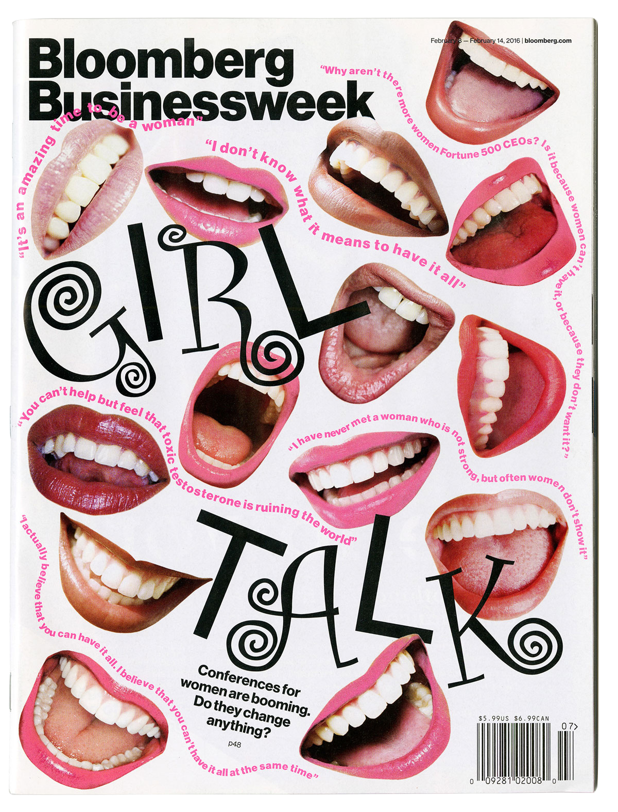
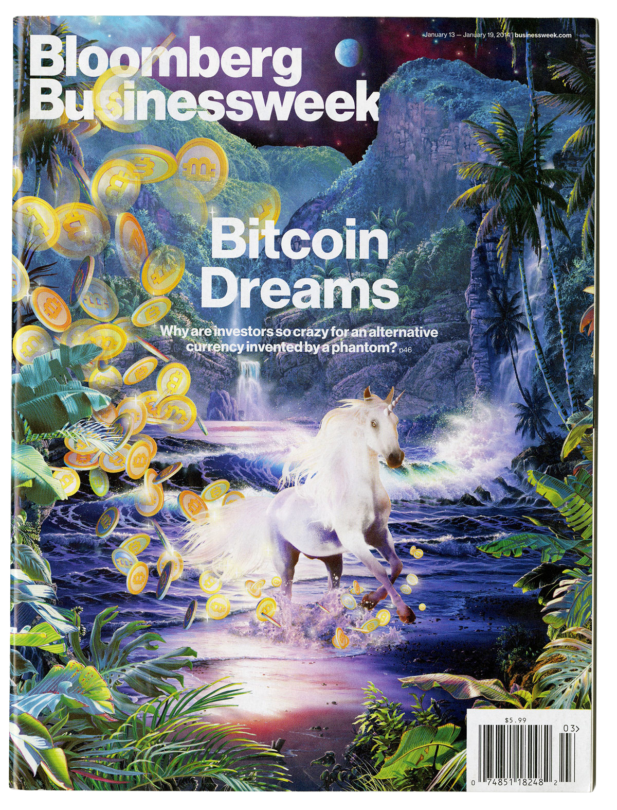
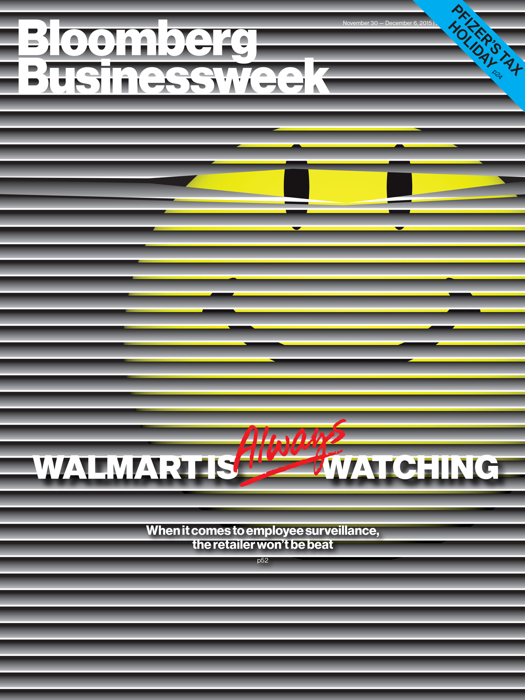
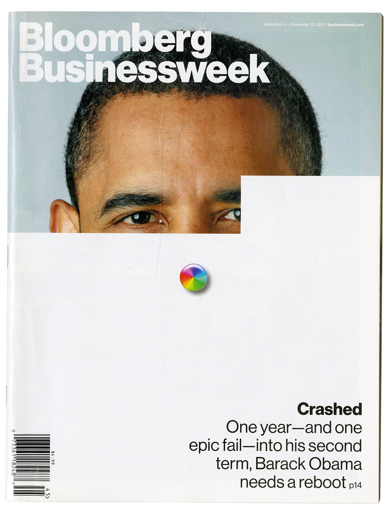
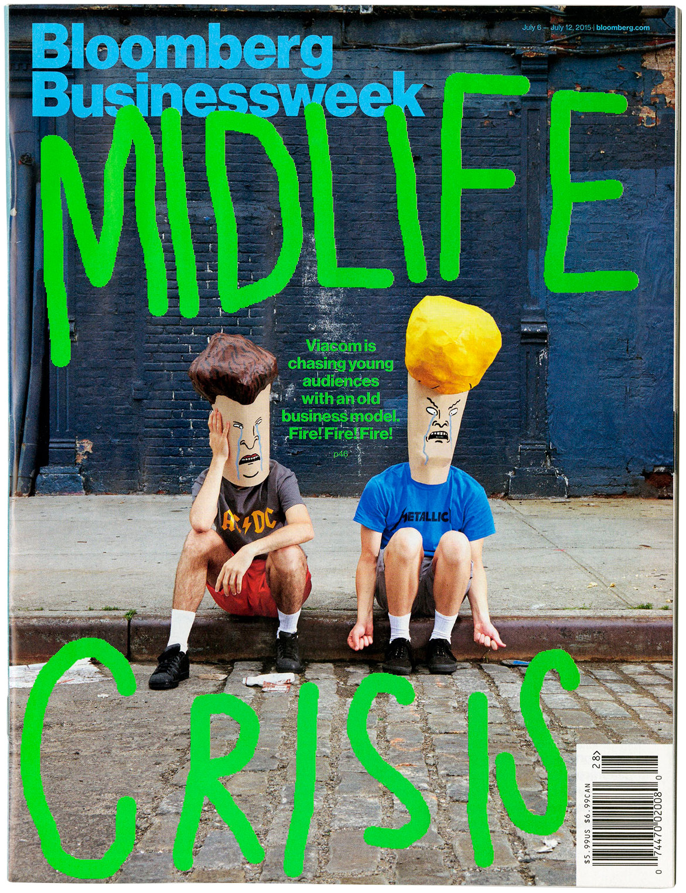
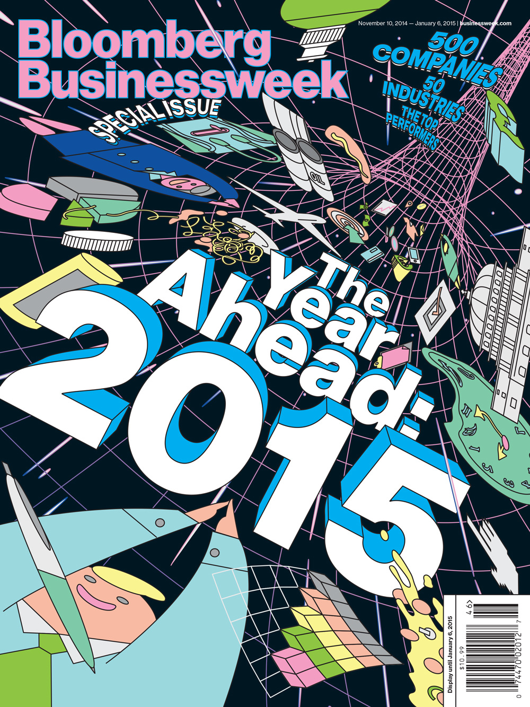
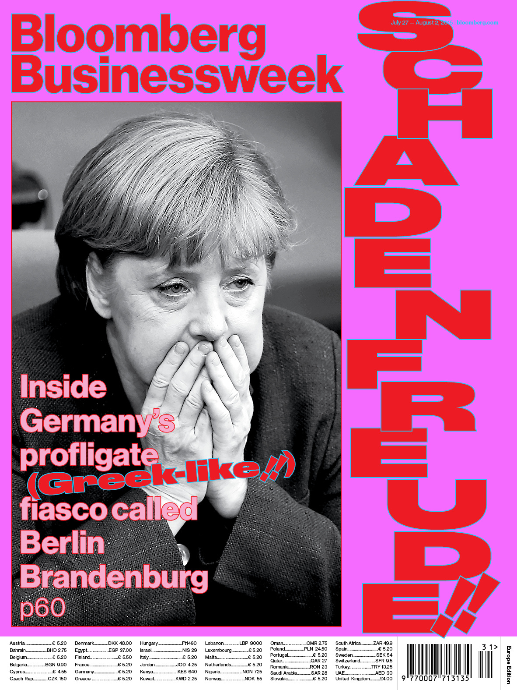
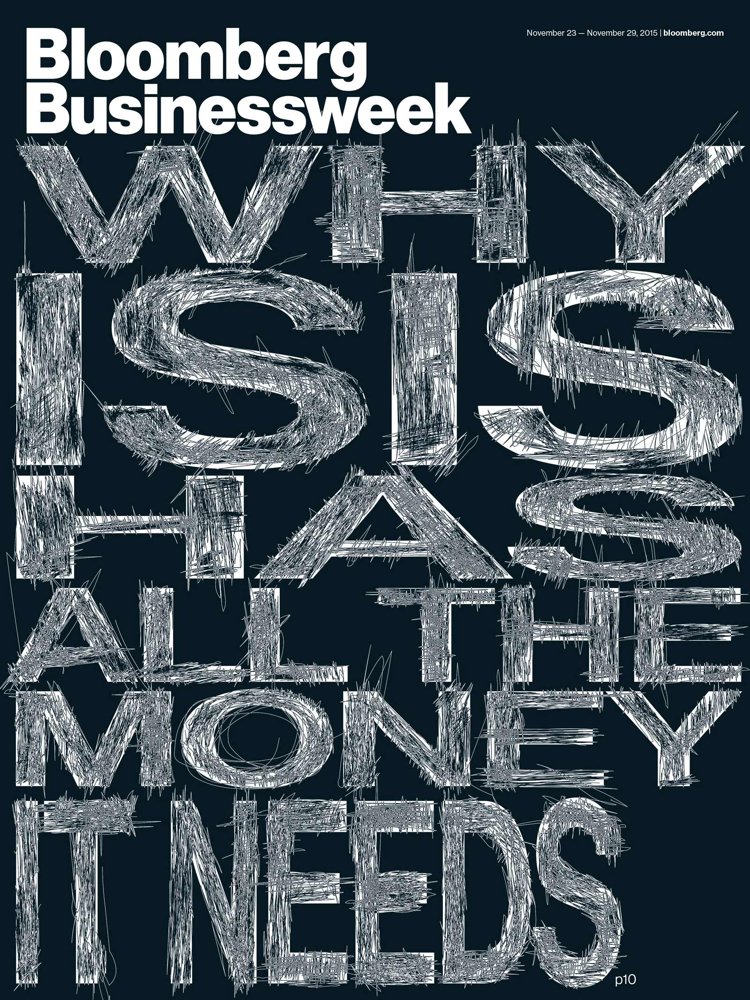

2019 — typography, animation
Hannahs
Titles design for a short film written and directed by India Donaldson. Play with sound here.
2020 — editing and composition, front-end development
An Ecotherapeutic Meditation In Ten Steps
(Link) At the height of the pandemic, photographers Jessica Lehrman and Phillip T. Annand brought the outdoors to many of us practicing social distancing at home. We composed and displayed over ten slides these nature recordings along with gentle chimes and tips from mindfulness experts. Collaboration with photo editor Eve Lyons and editor Joanna Nikas.
- 
-

- 
- 
- 
- 
- 
- 
- 
- 
2013–2016 — illustration, typography, creative direction
Bloomberg Businessweek covers
A selection of cool covers I had made
over the years.
2018 — creative direction, illustration, light front-end development
The Royal Wedding: Frequently Asked Questions
(Link) Every possible question about Royal Wedding answered in a relic of an internet format. Each click a potential reward! Read more about the project at ItsNiceThat here. Project in collaboration with Umi Syam who was insanely patient with me at a time when I wanted badly to learn css and jquery which involved a lot of me touching things and breaking them. If you don’t like to support journalism and do not have a nytimes.com subscription, here is a screen recording.
2020 — creative direction, project management
Mr. Louboutin’s Guided Tour
(Link) You know those red-bottomed stilettos beloved by republican-looking c-suite conference attending women but also red-carpet trotting celebs? The person who makes them is a lovely person and a true delight and loves art (his and others’) very much. Here we have Mr. Louboutin himself as your holographic guide, telling you all about his favorite pieces and also where to press buttons.
2019 — creative direction, front-end development
Gen X Is A Mess
(Link) An online magazine about the generation sandwiched between boomers and millennials. My gen-xer co-workers looked inward upon their impact on style and culture. The design has a draw-on feature by my millennial co-conspirator Aliza Aufrichtig; it sneakily happens behind the scenes on the parts of the page already visited by the user. If you hate to read the truth and do not have a nytimes.com subscription, here is a screen recording.
2020 — layout design, typography, front-end development
Life Inside an Assisted Living Facility
(Link) In April 2020 as the pandemic raged on in America, the New York Times gave disposable cameras to six residents of Evergreen Gardens, an assisted living facility in Colorado. Project by photo editor Eve Lyons and photographer Elliot Ross. Designed in collaboration with Adriana Ramić.
2018 – 2020 — illustrations
Editorial illustrations
A bunch of editorial illustrations
for The New York Times.
2013 — cover design, print layout design, typographical illustrations
The How To Issue
This issue is very special to me because it had paved the a way for me of thinking about and going about making design and making sense of things visually that remains very influential in my work.
2019 — creative direction
Y2K @ 20
(Link) This is one of my favorite projects I had worked on at the Times thus far and it is best if you could go to the link and click on as many things with blue underlines as you can. Just click and keep clicking, deeper and deeper. Edited with Joanna Nikas and Choire Sicha. Development by Rumsey Taylor and Aliza Aufrichtig.
2019 — art direction, layout design, front-end development
The American Roadtrip
(Link) Photographers Farah Al Qasimi, Daniel Arnold, Jessica Lehrman, and Andre Wagner drove across the continent, looking for symbols of America and Americanness. The design is a vertical chronology through place and time, retelling each photographer’s week-long journeys.
-
Facts:
- Tracy is currently ‘Visual Editor’ at The New York Times
Styles desk (2018 – ) - Formerly the Deputy Creative Director at Bloomberg Businessweek (2011 – 2016)
- Grew up in Toronto
- Immigrated from Hong Kong
- Taught three semesters at Parsons from 2017–2018
- Skillful
- Hardworking
- Indesign, Photoshop, Illustrator
- After Effects, Cinema 4D
- HTML/CSS (JS)
-
Press:
- Cover Feature, Computer Arts Magazine, January 2020
- Podcast Episode, Webbys, November 2019
- Feature, It’s Nice That, December 2018
- Interview, SSENSE, June 2018
- College Consent Project, Journalism.uk, May 2018
- Royal Wedding FAQ, ItsNiceThat, April 2018
- The Year According To, Walker Art Magazine, December 2017
- Early works, AIGA Eye on Design, July 2017
- Bookshelf, ItsNiceThat, May 2017
- IWD, ItsNiceThat, March 2017
- Businessweek covers, Gizmodo, November 2017
- School projects, ItsNiceThat, October 2014
-
Talks:
- An Interesting Day and Night, Amsterdam, August 2018
- Society of News Design, New York, March 2018
- Against All Odds at Pratt Institute, Brooklyn, March 2018
- T Magazine Spain, Madrid, February 2018
- Fall Lecture Series at RISD, Rhode Island, October 2017
- AMPA, Calgary, March 2016
- Typographics at Cooper Union, New York, June 2016
-
Clients include:
- Christine And The Queens
- Frank Ocean
- Columbia GSAPP
- Medium
- Breaker Magazine
- All work on this site © Tracy Ma